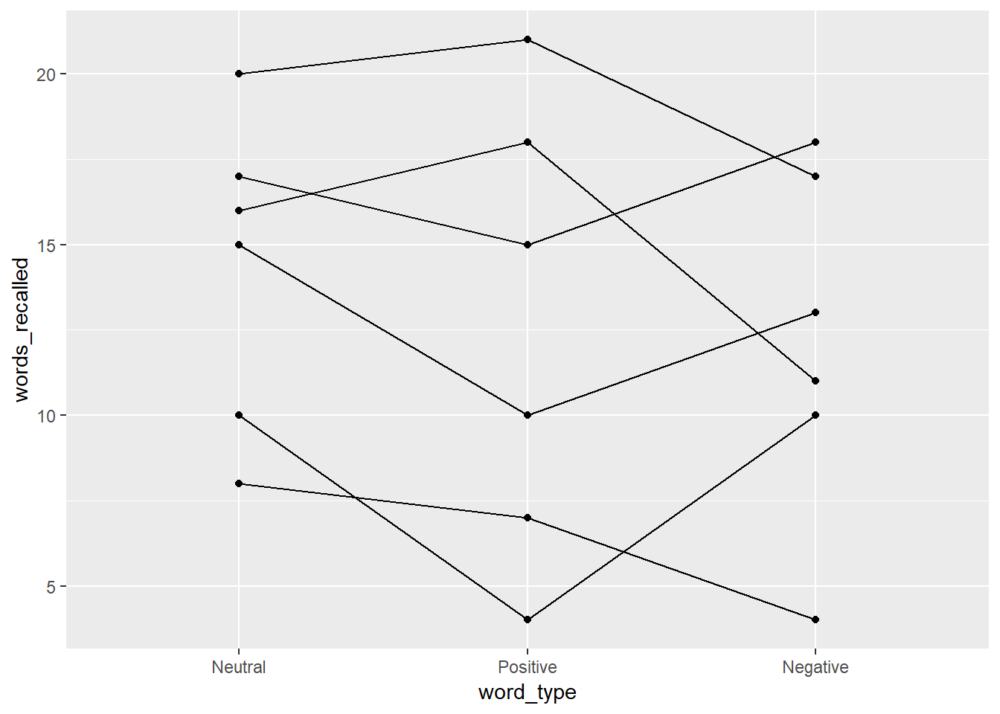
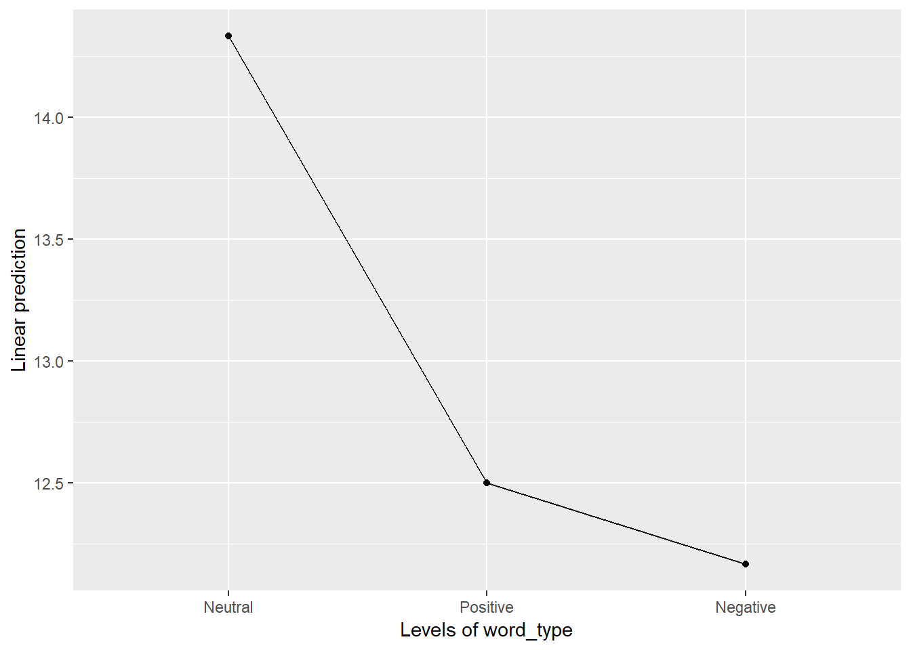
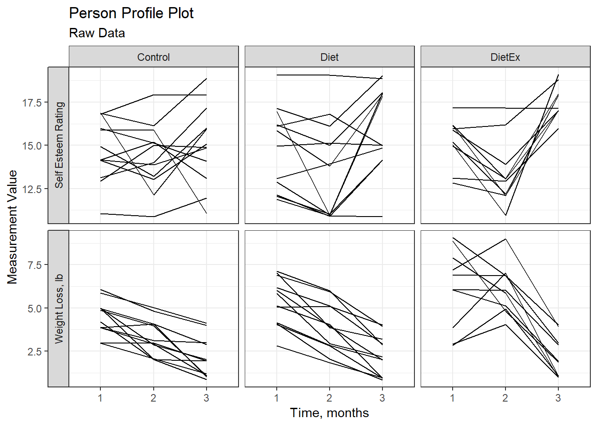
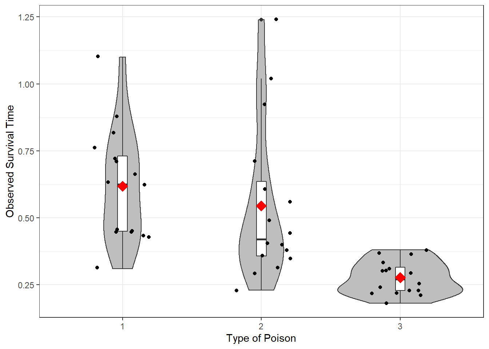

6 Repeated Measures ANOVA
Required Packages
library(tidyverse) # Loads several very helpful 'tidy' packages
library(furniture) # Nice tables (by our own Tyson Barrett)
library(afex) # needed for ANOVA, emmeans is loaded automatically.
library(multcomp) # for advanced control for multiple testing/Type 1 error6.1 Tutorial - Fitting RM ANOVA Models with afex::aov_4()
The aov_4() function from the afex package fits ANOVA models (oneway, two-way, repeated measures, and mixed design). It needs at least two arguments:
formula:
continuous_var ~ 1 + (RM_var|id_var)one observation per subject for each level of theRMvar, so eachid_varhas multiple lines for each subjectdataset:
data = .we use the period to signify that the datset is being piped from above
Here is an outline of what your syntax should look like when you fit and save a RM ANOVA. Of course you will replace the dataset name and the variable names, as well as the name you are saving it as.
NOTE: The aov_4() function works on data in LONG format only. Each observation needs to be on its one line or row with seperate variables for the group membership (categorical factor or fct) and the continuous measurement (numberic or dbl).
# RM ANOVA: fit and save
aov_name <- data_name %>%
afex::aov_4(continuous_var ~ 1 + (RM_var|id_var),
data = .)By running the name you saved you model under, you will get a brief set of output, including a measure of Effect Size.
NOTE: The ges is the generalized eta squared. In a one-way ANOVA, the eta-squared effect size is the same value, ie. generalized \(\eta_g\) and partial \(\eta_p\) are the same.
# Display basic ANOVA results (includes effect size)
aov_name To fully fill out a standard ANOVA table and compute other effect sizes, you will need a more complete set of output, including the Sum of Squares components, you will need to add summary() piped at the end of the model name before running it or after the model with a pipe.
NOTE: IGNORE the first line that starts with (Intercept)! Also, the ‘mean sum of squares’ are not included in this table, nor is the Total line at the bottom of the standard ANOVA table. You will need to manually compute these values and add them on the homework page. Remember that Sum of Squares (SS) and degrees of freedom (df) add up, but Mean Sum of Squreas (MS) do not add up. Also: MS = SS/df for each term.
This also runs and displays the results of Mauchly Tests for Sphericity, as well as the Greenhouse-Geisser (GG) and Huynh-Feldt (HF) Corrections to the p-value. If the Mauchly’s p-value is bigger than .05, do not use the corrections. If Mauchly’s p-value is less than .05, then apply the epsilon (eps or \(\epsilon\)) to multiply the degree’s of freedom. Yes, the df will be decimal numbers.
# Display fuller ANOVA results (sphericity tests)
summary(aov_name)To see all the Sumes-of-Squared residuals for ALL of the model comoponents, you add $aov at the end of the model name.
# Display all the sum of squares
aov_name$aovRepeated Measures MANOVA Tests (Pillai test statistic) is computed is you add $Anova at the end of the model name. This is a so called ‘Multivariate Test’. This is NOT what you want to do!
# Display fuller ANOVA results (includes sum of squares)
aov_name$AnovaIf you only need to obtain the omnibus (overall) F-test without a correction for violation of sphericity, you can add an option for correction = "none". You can also request both the generalized and partial \(\eta^2\) effect sizes with es = c("ges", "pes").
# RM ANOVA: no correction, both effect sizes
data_name %>%
afex::aov_4(continuous_var ~ 1 + (RM_var|id_var),
data = .,
anova_table = list(correction = "none",
es = c("ges", "pes")))Post Hoc tests may be ran the same way as the 1 and 2-way ANOVAs from the last unit.
NOTE: Use Fisher’s LSD (adjust = “none”) if the omnibus F-test is significant AND there are THREE measurements per subject or block. Tukey’s HSD (adjust = “tukey”) may be used even if the F-test is not significant or if there are four or more repeated measures.
# RM ANOVA: post hoc all pairwise tests with Fisher's LSD correction
aov_name %>%
emmeans::emmeans(~ RM_var) %>%
pairs(adjust = "none")# RM ANOVA: post hoc all pairwise tests with Tukey's HSD correction
aov_name %>%
emmeans::emmeans(~ RM_var) %>%
pairs(adjust = "tukey")A means plot (model based) can help you write up your results. This zooms in on just the means and will make all differences seem significant, so make sure to interpret it in conjunction with the ANOVA and post hoc tests.
# RM ANOVA: means plot
aov_name %>%
emmeans::emmip(~ RM_var)6.2 Words Recalled Data Example (Chapter 15, section A)
6.2.1 Data Prep
I input the data as a tribble which saves it as a data.frame and then cleaned up a few of the important variables.
d <- tibble::tribble(
~ID, ~word_type, ~words_recalled,
1, 1, 20,
2, 1, 16,
3, 1, 8,
4, 1, 17,
5, 1, 15,
6, 1, 10,
1, 2, 21,
2, 2, 18,
3, 2, 7,
4, 2, 15,
5, 2, 10,
6, 2, 4,
1, 3, 17,
2, 3, 11,
3, 3, 4,
4, 3, 18,
5, 3, 13,
6, 3, 10) %>%
mutate(word_type = factor(word_type,
labels = c("Neutral", "Positive", "Negative"))) %>%
mutate(fake_id = row_number())
d# A tibble: 18 x 4
ID word_type words_recalled fake_id
<dbl> <fct> <dbl> <int>
1 1 Neutral 20 1
2 2 Neutral 16 2
3 3 Neutral 8 3
4 4 Neutral 17 4
5 5 Neutral 15 5
6 6 Neutral 10 6
7 1 Positive 21 7
8 2 Positive 18 8
9 3 Positive 7 9
10 4 Positive 15 10
11 5 Positive 10 11
12 6 Positive 4 12
13 1 Negative 17 13
14 2 Negative 11 14
15 3 Negative 4 15
16 4 Negative 18 16
17 5 Negative 13 17
18 6 Negative 10 186.2.2 One-Way Independent ANOVA
First, let’s ignore the fact that we know this has repeated measures. As such, we will assume that each word type group is independent. Let’s look at what happens:
ind_anova <- d %>%
afex::aov_4(words_recalled ~ word_type + (1|fake_id),
data = .)
ind_anova$AnovaAnova Table (Type III tests)
Response: dv
Sum Sq Df F value Pr(>F)
(Intercept) 3042.00 1 101.4752 4.538e-08 ***
word_type 16.33 2 0.2724 0.7652
Residuals 449.67 15
---
Signif. codes: 0 '***' 0.001 '**' 0.01 '*' 0.05 '.' 0.1 ' ' 1If we ignored that the word_type groups are not independent, we get an F-statistic = 0.272 and p = 0.765.
What do you think will happen if we account for the repeated measures? Will the F-statistic increase or decrease?
6.2.3 One-Way RM ANOVA
Now, let’s look at the repeated measures. We do this by using afex::aov_4() and then the summary() functions as shown below.
oneway <- d %>%
afex::aov_4(words_recalled ~ 1 + (word_type|ID),
data = .)
summary(oneway)
Univariate Type III Repeated-Measures ANOVA Assuming Sphericity
Sum Sq num Df Error SS den Df F value Pr(>F)
(Intercept) 3042.00 1 381.33 5 39.8864 0.001466 **
word_type 16.33 2 68.33 10 1.1951 0.342453
---
Signif. codes: 0 '***' 0.001 '**' 0.01 '*' 0.05 '.' 0.1 ' ' 1
Mauchly Tests for Sphericity
Test statistic p-value
word_type 0.2134 0.045538
Greenhouse-Geisser and Huynh-Feldt Corrections
for Departure from Sphericity
GG eps Pr(>F[GG])
word_type 0.55972 0.3282
HF eps Pr(>F[HF])
word_type 0.6077293 0.3309148Here, we see a number of pieces of information, including the sums of squares, F-statistic, and p-value. The F-statistic is now 1.195 and the p-value (although still not signfiicant) is .342. So what happened to the F-statistic? It decreased! So by using the information that these are repeated measures, we have more power. Why is that?
If we look at the output for the two ANOVAs above, both have the sums of squares for word_type at 16.33 so that didn’t change at all. So what did change? Well, it comes down to understanding what is happening to the error term. Although not shown explicitly in the tables above, consider that:
\[ \text{Independent ANOVA: } SS_{total} = SS_{bet} + SS_w \]
\[ \text{RM ANOVA: } SS_{total} = SS_{RM} + SS_{sub} + SS_{inter} \]
\(SS_{total}\) is the same in both and \(SS_{RM} = SS_{RM}\) so what we are doing is splitting up the \(SS_w\) into \(SS_{sub} + SS_{inter}\) where only the \(SS_{inter}\) is the error term now.
This means we have more power with the same amount of data.
Let’s now plot this using a spaghetti plot.
d %>%
ggplot(aes(word_type, words_recalled, group = ID)) +
geom_line() +
geom_point()
The output provides us with a bit of an understanding of why there is not a significant effect of word_type. In addition to a spaghetti plot, it is often useful to show what the overall repeated measure factor is doing, not the individuals (especially if your sample size is larger than 20). To do that, we can use:
oneway %>%
emmeans::emmip(~ word_type)
Although there is a pattern here, we need to consider the scale. Looking at the spaghetti plot, we have individuals that range from 5 to 20 so a difference of 2 or 3 is not large. However, it is clear that a pattern may exist and so we should probably investigate this further, possibly with a larger sample size.
6.3 Another Example - Weight Loss
Contrived data on weight loss and self esteem over three months, for three groups of individuals: Control, Diet and Diet + Exercise. The data constitute a double-multivariate design.
6.3.1 Restructure the data from wide to long format
Wide format
head(carData::WeightLoss, n = 6) group wl1 wl2 wl3 se1 se2 se3
1 Control 4 3 3 14 13 15
2 Control 4 4 3 13 14 17
3 Control 4 3 1 17 12 16
4 Control 3 2 1 11 11 12
5 Control 5 3 2 16 15 14
6 Control 6 5 4 17 18 18Restructure
WeightLoss_long <- carData::WeightLoss %>%
dplyr::mutate(id = row_number() %>% factor()) %>%
tidyr::gather(key = var,
value = value,
starts_with("wl"), starts_with("se")) %>%
tidyr::separate(var,
sep = 2,
into = c("measure", "month")) %>%
tidyr::spread(key = measure,
value = value) %>%
dplyr::select(id, group, month, wl, se) %>%
dplyr::mutate_at(vars(id, month), factor) %>%
dplyr::arrange(id, month) Long format
head(WeightLoss_long, n = 20) id group month wl se
1 1 Control 1 4 14
2 1 Control 2 3 13
3 1 Control 3 3 15
4 2 Control 1 4 13
5 2 Control 2 4 14
6 2 Control 3 3 17
7 3 Control 1 4 17
8 3 Control 2 3 12
9 3 Control 3 1 16
10 4 Control 1 3 11
11 4 Control 2 2 11
12 4 Control 3 1 12
13 5 Control 1 5 16
14 5 Control 2 3 15
15 5 Control 3 2 14
16 6 Control 1 6 17
17 6 Control 2 5 18
18 6 Control 3 4 18
19 7 Control 1 6 17
20 7 Control 2 5 16Summary table
WeightLoss_long %>%
dplyr::group_by(group, month) %>%
furniture::table1(wl, se)
-------------------------------------------------------------------------------------------------------
group, month
Control_1 Diet_1 DietEx_1 Control_2 Diet_2 DietEx_2
n = 12 n = 12 n = 10 n = 12 n = 12 n = 10
wl
4.5 (1.0) 5.3 (1.4) 6.2 (2.3) 3.3 (1.1) 3.9 (1.4) 6.1 (1.4)
se
14.8 (1.9) 14.8 (2.4) 15.2 (1.3) 14.3 (1.9) 13.8 (2.8) 13.3 (1.9)
Control_3 Diet_3 DietEx_3
n = 12 n = 12 n = 10
2.1 (1.2) 2.2 (1.1) 2.2 (1.2)
15.1 (2.4) 16.2 (2.5) 17.6 (1.0)
-------------------------------------------------------------------------------------------------------carData::WeightLoss %>%
dplyr::group_by(group) %>%
furniture::table1(wl1, wl2, wl3,
se1, se2, se3)
--------------------------------------
group
Control Diet DietEx
n = 12 n = 12 n = 10
wl1
4.5 (1.0) 5.3 (1.4) 6.2 (2.3)
wl2
3.3 (1.1) 3.9 (1.4) 6.1 (1.4)
wl3
2.1 (1.2) 2.2 (1.1) 2.2 (1.2)
se1
14.8 (1.9) 14.8 (2.4) 15.2 (1.3)
se2
14.3 (1.9) 13.8 (2.8) 13.3 (1.9)
se3
15.1 (2.4) 16.2 (2.5) 17.6 (1.0)
--------------------------------------Raw data plot (exploratory)
WeightLoss_long %>%
tidyr::gather(key = measure,
value = value,
wl, se) %>%
dplyr::mutate(measure = fct_recode(measure,
"Weight Loss, lb" = "wl",
"Self Esteem Rating" = "se")) %>%
ggplot(aes(x = month,
y = value %>% as.numeric %>% jitter,
group = id)) +
facet_grid(measure ~ group,
scale = "free_y",
switch = "y") +
geom_line() +
theme_bw() +
labs(x = "Time, months",
y = "Measurement Value",
title = "Person Profile Plot",
subtitle = "Raw Data")
6.3.2 Does weight long change over time?
Fit the model
fit_wl <- WeightLoss_long %>%
afex::aov_4(wl ~ 1 + (month|id),
data = .)Brief output - uses the Greenhouse-Geisser correction for violations of sphericity (by default)
fit_wlAnova Table (Type 3 tests)
Response: wl
Effect df MSE F ges p.value
1 month 2.00, 65.94 1.08 80.31 *** .43 <.0001
---
Signif. codes: 0 '***' 0.001 '**' 0.01 '*' 0.05 '+' 0.1 ' ' 1
Sphericity correction method: GG Lots more output
summary(fit_wl)
Univariate Type III Repeated-Measures ANOVA Assuming Sphericity
Sum Sq num Df Error SS den Df F value Pr(>F)
(Intercept) 1584.35 1 162.314 33 322.115 < 2.2e-16 ***
month 173.88 2 71.451 66 80.308 < 2.2e-16 ***
---
Signif. codes: 0 '***' 0.001 '**' 0.01 '*' 0.05 '.' 0.1 ' ' 1
Mauchly Tests for Sphericity
Test statistic p-value
month 0.99908 0.98539
Greenhouse-Geisser and Huynh-Feldt Corrections
for Departure from Sphericity
GG eps Pr(>F[GG])
month 0.99908 < 2.2e-16 ***
---
Signif. codes: 0 '***' 0.001 '**' 0.01 '*' 0.05 '.' 0.1 ' ' 1
HF eps Pr(>F[HF])
month 1.063446 2.090759e-18To force no GG correction:
fit_wl_noGG <- WeightLoss_long %>%
afex::aov_4(wl ~ 1 + (month|id),
data = .,
anova_table = list(correction = "none"))
fit_wl_noGGAnova Table (Type 3 tests)
Response: wl
Effect df MSE F ges p.value
1 month 2, 66 1.08 80.31 *** .43 <.0001
---
Signif. codes: 0 '***' 0.001 '**' 0.01 '*' 0.05 '+' 0.1 ' ' 1To request BOTH effect sizes: partial eta squared and generalized eta squared
fit_wl_2es <- WeightLoss_long %>%
afex::aov_4(wl ~ 1 + (month|id),
data = .,
anova_table = list(es = c("ges", "pes")))
fit_wl_2esAnova Table (Type 3 tests)
Response: wl
Effect df MSE F ges pes p.value
1 month 2.00, 65.94 1.08 80.31 *** .43 .71 <.0001
---
Signif. codes: 0 '***' 0.001 '**' 0.01 '*' 0.05 '+' 0.1 ' ' 1
Sphericity correction method: GG To force no GG correction AND request BOTH effect sizes
fit_wl_noGG <- WeightLoss_long %>%
afex::aov_4(wl ~ 1 + (month|id),
data = .,
anova_table = list(correction = "none",
es = c("ges", "pes")))
fit_wl_noGGAnova Table (Type 3 tests)
Response: wl
Effect df MSE F ges pes p.value
1 month 2, 66 1.08 80.31 *** .43 .71 <.0001
---
Signif. codes: 0 '***' 0.001 '**' 0.01 '*' 0.05 '+' 0.1 ' ' 1Estimated marginal means
fit_wl %>%
emmeans::emmeans(~ month) month emmean SE df lower.CL upper.CL
X1 5.294118 0.2635314 62.4 4.767393 5.820842
X2 4.352941 0.2635314 62.4 3.826217 4.879665
X3 2.176471 0.2635314 62.4 1.649746 2.703195
Confidence level used: 0.95 pairwise post hoc
fit_wl %>%
emmeans::emmeans(~ month) %>%
pairs(adjust = "none") contrast estimate SE df t.ratio p.value
X1 - X2 0.9411765 0.2523525 66 3.730 0.0004
X1 - X3 3.1176471 0.2523525 66 12.354 <.0001
X2 - X3 2.1764706 0.2523525 66 8.625 <.0001means plot
fit_wl %>%
emmeans::emmip( ~ month)